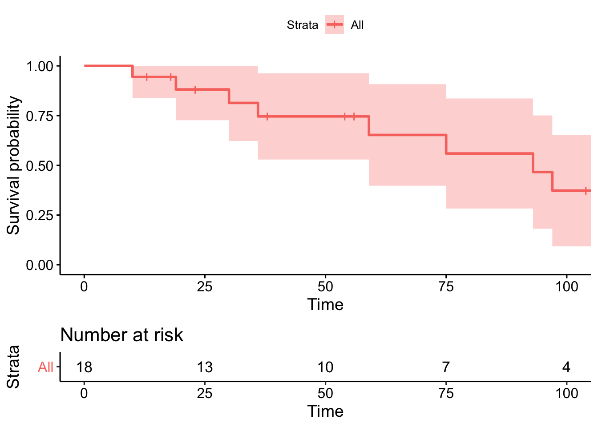
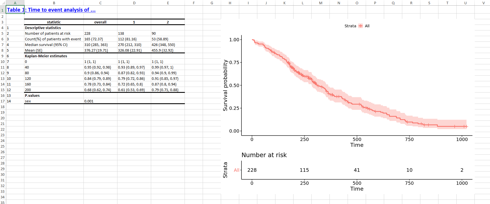

tham khảo tại Collett (2015) và Kalbfleisch and Prentice (2011)
Gọi \(T\) là một biến ngẫu nhiên không âm đại diện cho khoảng thời gian tính tới khi bệnh nhân tử vong. Có ba phương pháp để xác định phân bố xác suất của \(T\), đó là thông qua hàm tồn tại, hàm mật độ xác suất và hàm nguy cơ.
Hàm tồn tại được định nghĩa dưới phân bố rời rạc và liên tục bởi xác suất của \(T\) lớn hơn giá trị \(t\) trong tập xác định của T \[ H(t) = \Bbb{P}(T>t), \quad 0<t< \infty \] dễ dàng nhận thấy \(H(t)\) có mối quan hệ với hàm phân bố tích lũy \(F(t) = \Bbb{P}(T \le t)\), ta có \(H(t) = 1 - F(t)\). Vì thế \(H(t)\) là một hàm không tăng, có giới hạn phải của \(t\) với \(F(0) = 1\) và \(\lim_{t\to \infty}F(t)=0\).
Hàm mật độ xác suất (PDF) của \(T\) là \[ f(t) = -\frac{dF(t)}{dt} \] với TXĐ của T là \([0,\infty)\). để dễ dàng, ta hãy nhớ rằng hàm \(f(t)\) chính là mật độ của xác suất giữa \(t\) và \(t+h\) với \(h \to 0\). Ta có thể ký hiệu như sau \[ f(t)h \approx \Bbb{P}(t \le T < t+h) = S(t) - S(t+h) \] với \(f(t) \ge 0\), \(\int_0^{\infty}f(t)dt = 1\), và \[ S(t) = \int_t^{\infty}f(s)ds. \]
Hàm nguy cơ được định nghĩa như sau \[ \lambda(t) = \lim_{h\to 0^+}\frac{\Bbb{P}(t \le T <t+h|T\ge t)}{h}, \tag{1} \] gọi là tốc độ tức thời tại thời điểm mà sự kiện xảy ra (bệnh nhân tử vong), cho rằng bệnh nhân đó đã sống tới thời gian \(t\). Hàm nguy cơ có mối quan hệ với hàm mật độ và hàm sống sót. Từ Eq. (1) ta có \[ \lambda(t) = -\frac{f(t)}{S(t)} = -\frac{d\ln S(t)}{dt}. \]
Đạo hàm hai vế ta có \[ S(t) = \exp\bigg[-\int_0^t\lambda(s)ds\bigg] = \exp[-\Lambda(t)], \tag{2} \] với \(\Lambda(t)\) gọi là hàm nguy cơ tích lũy. Nếu ta lấy đạo hàm hai vế của Eq. (2) ta được \[ f(t) = \lambda(t)\exp[-\Lambda(t)]. \tag{3} \]
Ngoài ra có một đại lượng cũng được sử dụng nhiều trong phân tích là expected residual life tại thời điểm \(t\), \[ r(t) = \Bbb{E}(T-t|T \ge t), \] đại lượng này giải thích thời gian kỳ vọng còn lại của bệnh nhân biết rằng bệnh nhân vẫn chưa tử vọng tại thời điểm \(t\). Ta có thể biến đổi sau \[ r(t) = \frac{\int_t^{\infty}(s-t)f(s)ds}{S(t)}, \] công thức trên có thể chứng minh thành \[ r(t) = \frac{\int_t^{\infty}S(s)ds}{S(t)}, \tag{4} \] dưới điều kiện \(\Bbb{E}(T) < \infty\), nghĩa là nếu \(\Bbb{E}(T) < \infty \Rightarrow \lim_{t \to \infty}tF(t) =0\).
Ta xét \(\int_t^{\infty}(s-t)f(s)ds\) tương đương với \[ \begin{aligned} &= -(s-t)S(s)\bigg|_t^{\infty} + \int_t^{\infty} S(s)ds \\ &= -\lim_{s \to \infty}sS(s) + \int_t^{\infty} S(s)ds, \end{aligned} \] như vậy nếu \(\lim_{s \to \infty} sS(s) = 0\) thì ta được kết quả Eq. (4). Phần còn lại ta cần xem xét là vì sao \(\Bbb{E}(T) < \infty \Rightarrow \lim_{t \to \infty} tS(t) = 0\).
Ta xét \(\int_{t}^{\infty}sS(s)ds\) tương đương với \[ \int_0^{\infty}(u+t)f(u+t)d(u+t) = \Bbb{E}(u+t) = \Bbb{E}(u) +t, \] với \(u = s-t\). Như vậy nếu \(\Bbb{E}(U) < \infty\) thì \(\int_{t}^{\infty}sS(s)ds < \infty\), ta thấy rằng tích phân này chỉ xác định khi \(\lim_{s \to \infty} sS(s) < \infty\). Giới hạn này là dạng \(\infty.0\), như vậy nó sẽ bằng 0 nếu tốc độ của \(S(s)\) nhanh hơn tốc độ của \(s\) khi \(s \to \infty\). Ta có thể viết giải thích này dưới công thức toán học là \(S(s) = o(1/s)\).
Nếu \(t = 0\) ta có \[ \Bbb{E}(T) = r(0) = \int_0^{\infty}F(s)ds. \tag{5} \] Từ Eq. (4) ta có \[ \frac{1}{r(t)} = -\frac{d}{dt}\ln\int_t^{\infty}S(s)ds, \] lấy tích phân hai vế cận từ \(0 \rightarrow t\), ta được \[ \int_0^t\frac{ds}{r(s)} = -\ln\int_t^{\infty}S(s)ds+\ln r(0), \] cuối cùng thu được \[ S(t) = \frac{r(0)}{r(t)}\exp\bigg[-\int^t_0\frac{du}{r(u)}\bigg] \] chính là hàm số sống sót.
Nếu \(T\) là cột thời gian rời rạc tại các giá trị \(\{a_i\}_{i=1,2,\dots}\) và ta có hàm khối xác suất (probability mass function-PMF) là \[ f(a_i)=\Bbb{P}(T=a_i), \quad i = 1,2,\dots \] hàm sống sót là \[ S(t) = \sum_{j:a_j>t}f(x_j). \] Hàm nguy cơ là \[ \lambda_i = \Bbb{P}(T=a_i|T \ge a_i) = \frac{f(a_i)}{S(a^-_i)}, \quad i = 1,2,\dots \] với \(S(a^-) = \lim_{t\to a^-}S(t)\), tương ứng với Eq. (2) và Eq. (3) ta có \[ S(t) = \prod_{j:a_j \le t}(1-\lambda_j), \tag{6} \] và \[ f(a_i) = \lambda_i\prod_{j=1}^{i-1}(1-\lambda_j). \tag{7} \] Ta có thể giải thích hai phương trình trên như sau: đối với Eq. (6), ta thấy rằng \(S(t)\) chính là xác suất mà bệnh nhân tử vong sau mốc thời gian \(t\), nghĩa là \(\Bbb{P}(T>t)\). Giả sử \(t = a_t\), ta có \[ \Bbb{P}(T>a_t) = \Bbb{P}(T>a_t|T>a_{t-1})\Bbb{P}(T>a_{t-1}) \] ta lại có \(\Bbb{P}(T>a_{t-1}) = \Bbb{P}(T > a_{t-1}|T>a_{t-2})\), như vậy \[ \Bbb{P}(T>a_t) = \Bbb{P}(T>a_t|T>a_{t-1})\Bbb{P}(T > a_{t-1}|T>a_{t-2}) \] biến đổi theo cách này ta sẽ có \[ \Bbb{P}(T>a_t) = \Bbb{P}(T>a_t|T>a_{t-1})\Bbb{P}(T > a_{t-1}|T>a_{t-2})\dots\Bbb{P}(T>a_1|T>a_0)\Bbb{P}(T>a_0) \] ta biết rằng \(\Bbb{P}(T>a_0) = \Bbb{P}(T>0) = 1\), nên \[ \Bbb{P}(T>a_t) = \prod^t_{i=1}\Bbb{P}(T>a_i|T>a_{i-1}). \] Mà ta có \(1-\lambda_i = \Bbb{P}(T>a_i|T > a_{i-1})\), nên ta suy ra Eq. (6). Bằng cách suy luận tương tự ta cũng có thể suy ra Eq. (7).
Đối với cả hai biến liên tục hay rời rạc ta đều có thể suy luận như sau: gọi \[ d\Lambda(t) = \lambda(t)dt = \Lambda(t+dt^-)- \Lambda(t^-) = \Bbb{P}(t \le T < t+dt|T \ge t), \] ta có \[ S(t) = \lim_{r \to \infty}\prod_{k=1}^r[1 - d\Lambda(u_k)] = \lim_{r \to \infty}\prod_{k=1}^r\big\{1 - [\Lambda(u_k) -\Lambda(u_{k-1})]\big\}, \] trong đó \(0 = u_0<u_1<\dots<u_r=t\). Như vậy khi \(r \to \infty\) thì \((u_i-u_{i-1}) \to 0\). Đối với trường hợp biến thời gian liên tục ta có thể chứng minh rằng \[ S(t) = \lim_{r \to \infty}\prod^r_{k =0}[1-d\Lambda(u_{k})] = \exp\bigg[-\int_0^t\lambda(u)du\bigg]. \]
Lấy logarit tự nhiên của 2 vế ta có \[ \lim_{r \to \infty}\sum_{k=0}^r\ln[1-d\Lambda(u_k)] = -\int_0^t\lambda(u)du \] ta có \(\lim_{x\to 0}\ln(1-x) = -x\), nghĩa là \(\ln(1-x\Delta x) = -x\Delta x + o(\Delta x)\). Tương tự ta có \(\ln[1-\lambda(u)\Delta u] = \lambda(u)\Delta u + o(\Delta u)\), nếu lấy tổng ta sẽ có \[ \sum_{k=0}^{\infty}\ln[1-\lambda(u_k)\Delta u_k] = -\sum_{k=0}^{\infty}\lambda(u_k)\Delta u_k + o(\Delta u_k), \] chính là xấp xỉ của tích phân Riemann \(\int_0^t \lambda(u)du\).
Đối với biến thời gian rời rạc thì \[ \begin{aligned} d\Lambda(t) &= \Bbb{P}(t \le T < t+dt|T \ge t) \\ &= \Bbb{P}(t \le T \le t|T \ge t) \\ &= \Bbb{P}(T = t|T \ge t) \\ &= \lambda, \end{aligned} \] vì thế ta suy ra Eq. (6).
Ta có hàm phân bố cực (empirical distribution function- EDF) có dạng
\[
F_n(x) = \frac{\text{Số bệnh nhân có giá trị}\le x}{n},
\]
chính là ước lượng của CDF \(\Bbb{P}(X \le x)\).
Trong phân tích sống sót, rất thường xuyên hàm EDF được sử dụng để thể hiện thời gian sống sót của các bệnh nhân. Trong trường hợp không có censor xảy ra thì hàm tồn tại sẽ được biểu diễn thông qua CDF, nghĩa là \(S(t) = 1 - F(t)\), và là một hàm bậc thang giảm dần, với mỗi bậc giảm 1 đơn vị. Tuy nhiên trong thực thế censor gần như tồn tại trong tất cả các dữ liệu sống sót vì thế ta cần một phương pháp để ước lượng CDF.
Để dễ hình dung ta hãy xem xét các khoảng thời gian \([t_j,t_{j+1})\) với \(j = 0,\dots,k\), có tất cả \(d_j\) bệnh nhân tử vong và \(m_j\) bệnh nhân là censor tại các mốc thời gian \(t_{j1}, t_{j2},\dots,t_{jm_j}\). Ta cũng lấy \(n_j = (d_j+m_j)+\dots+(d_k+m_k)\) chính là tổng số bệnh nhân có nguy cơ ngay trước mốc thời gian \(t_{j+1}\). Xác suất tử vong tại thời điểm \(t_j\) sẽ là \[ \Bbb{P}(T=t_j) = S(t_j^-)-S(t_j). \]
Ta cũng giả sử rằng thời gian censor tại \(t_{jl}\) là \[ \Bbb{P}(T>t_{jl}) = S(t_{jl}). \] Như vậy, mỗi mốc thời gian censor \(t_{jl}\) chỉ cung cấp thông tin rằng một bệnh nhân nào đó vẫn chưa tử vong tới thời điểm \(t_{jl}\). Như vậy giả thuyết độc lập của censoring là hợp lý. Ta có thể suy ra hàm likelihood là \[ L = \prod_{j=1}^k\bigg\{\Big[S(t_j^-)-S(t_j)\Big]^{d_j}\prod_{l=1}^{m_j}S(t_{jl})\bigg\}, \] đây chính là một hàm số của EDF và đạt cực đại khi \(\widehat{S} = \arg\max L\).
Ở đây ta thấy rằng \(\widehat{S}(t)\) là một hàm số không liên tục tại các mốc thời gian tử vong mà ta quan sát được. Hơn nữa \(t_{jl} > t_j\), nên \(S(t_{jl})\) đạt cực đại tại \(S(j)\). Vì thế \(\widehat{S}_{MLE}(t)\) được xác định thông qua các \(\{\widehat{\lambda}_i\}_{i=1,\dots,k}\) tại \(\{t_i\}_{i=1,\dots,k}\). Dựa vào kết quả từ phần trước ta có \[ \widehat{S}(t_j) = \prod_{l=1}^j(1-\widehat{\lambda}_l) \tag{8} \] và \[ \widehat{S}(t_j^-) = \prod_{l=1}^{j-1}(1-\widehat{\lambda}_l), \tag{9} \] như vậy các \(\widehat{\lambda}_l\) được chọn để hàm số sau đạt cực đại \[ \prod_{j=1}^k\bigg[\lambda_j^{d_j}\prod_{l=1}^{j-1}(1-\lambda_l)^{d_j}\prod_{l=1}^j(1-\lambda_l)^{m_j} \bigg] \] ta có thể rút gọn công thức trên như sau \[ \prod_{j=1}^k\bigg[\frac{\lambda_j^{d_j}}{(1-\lambda_j)^{d_j}}\prod_{l=1}^j(1-\lambda_l)^{d_j+m_j} \bigg]. \]
Ta xét \(\prod_{j=1}^k\prod_{l=1}^j(1-\lambda_l)^{d_j+m_j}\), phần này có thể chỉ ra rằng tương đương với \(\prod_{j=1}^k(1-\lambda_j)^{n_j}\). Như vậy phương trình trên sẽ tương đương với \[ \prod_{j=1}^k\bigg[\frac{\lambda_j}{(1-\lambda_j)}\bigg]^{d_j}(1-\lambda_j)^{n_j} \tag{10} \]
Ta khai triển \(\prod_{j=1}^k\prod_{l=1}^j(1-\lambda_l)^{d_j+m_j}\) với \(k=4\), để đơn giản tạm ký hiệu \((1-\lambda_l) = p_l\), ta sẽ được
\[ \begin{aligned} &j =1: \quad p_1^{d_1+m_1} \\ &j =2: \quad (p_1p_2)^{d_2+m_2} \\ &j=3: \quad (p_1p_2p_3)^{d_3+m_3} \\ &j=4: \quad (p_1p_2p_3p_4)^{d_4+m_4} \end{aligned} \] ta có thể viết lại như sau \[ \begin{aligned} &p_1^{d_1+m_1+d_2+m_2+d_3+m_3+d_4+m_4} &&= p_1^{n_1} \\ &p_2^{d_2+m_2+d_3+m_3+d_4+m_4} &&= p_2^{n_2} \\ &p_3^{d_3+m_3+d_4+m_4} &&= p_3^{n_3} \\ &p_4^{d_4+m_4} &&= p_4^{n_4} \end{aligned} \] suy ra \[ \prod_{j=1}^4\prod_{l=1}^j(p_l)^{d_j+m_j} =\prod_{j=1}^4p_j^{n_j} \] như vậy , thay \(p_j = 1-\lambda_j\) và \(4 \rightarrow k\), ta có thể thấy rằng \(\prod_{j=1}^k\prod_{l=1}^j(1-\lambda_l)^{d_j+m_j}\) có thể viết thành \(\prod_{j=1}^k(1-\lambda_j)^{n_j}\)
Dễ dàng nhận thấy Eq. (10) chính là hàm likelihood của phân bố binomial. và ta có thể dễ dàng xác định rằng \[ \widehat{\lambda}_{j_{MLE}} = \frac{d_j}{n_j}, \quad j = 1,\dots,k \] như vậy ta dễ dàng tìm được ước lượng Kaplan-Meier của hàm sống sót là \[ \widehat{S}(t) = \prod_{j:t_j\le t}\frac{n_j-d_j}{n_j} \tag{11} \]
Như vậy dựa vào công thức trên ta có thể tính ra và vẽ đồ thị Kaplan-Meier. Lưu ý là cái mốc thời gian xem xét chính là các mốc thời gian bệnh nhân tử vong, các mốc thời gian censor sẽ không được xem xét. Sau khi tính ra được ước lượng của hàm sống sót tại các mốc thời gian tử vong và vẽ biểu đồ KM, ta đã hoàn thành phần thống kê mô tả. Để tiến đến phân thống kê suy luận ta cần hiểu về phân bố của các ước lượng dưới cái nhìn tiệm cận hay mẫu lớn (asymptotic hay large-sample).
Ta có \[ \ln\widehat{S}(t) = \sum_{j:t_j \le t} \ln(1-\widehat{\lambda}_j), \] Ta sử dụng phương pháp Delta để tìm phương sai của \(\ln\widehat{S}(t)\), ta có \[ \widehat{\Bbb{V}}[\ln\widehat{S}(t)] = \sum_{j:t_j \le t}(1-\widehat{\lambda}_j)^{-2}\widehat{\Bbb{V}}(1-\widehat{\lambda}_j) = \sum_{j:t_j \le t}\frac{d_j}{n_j(n_j-d_j)}. \]
Từ đó ta có thể tính được phương sai của \(\widehat{S}(t)\) là \[ \widehat{\Bbb{V}}[\widehat{S}(t)] = \widehat{S}^2(t)\sum_{j:t_j \le t}\frac{d_j}{n_j(n_j-d_j)}. \tag{12} \]
Đầu tiên ta thấy rằng \(\lambda\) đóng vai trò như một tham số xác suất trong phân bố binomial, nghĩa là \(d \sim \mathcal{Bin}(n,\lambda)\). Ta sẽ có \(\widehat{\lambda}_{MLE} = d/n\), như vậy \[ \Bbb{V}[1-\widehat{\lambda}_{MLE}] = \frac{n\lambda(1-\lambda)}{n^2} = \frac{\lambda(1-\lambda)}{n} \] thế \(\lambda = \widehat{\lambda}_{MLE}\) ta được \[ \Bbb{V}[1-\widehat{\lambda}_{MLE}] = \frac{d(n-d)}{n^3} \]
Tiếp theo ta áp dụng phương pháp Delta để tìm phương sai của một hàm số \(h(1-\lambda)\). Phương pháp này chính là khai triển một hàm số bằng phương pháp Taylor tạo thành một phương trình tuyến tính để tính xấp xỉ, rồi lấy phương sai của hai hệ thức đầu tiên. Nghĩa là ta sẽ có kết quả tổng quát sau \[ \Bbb{V}[g(X)] \approx \bigg\{\frac{dg(X)}{dX}\bigg\}^2\Bbb{V}(X). \]
ta cần tính \(\Bbb{V}\big[\ln(1-\widehat{\lambda}_{MLE})\big]\), áp dụng công thức trên ta có \[ \begin{aligned} \Bbb{V}\big[\ln(1-\widehat{\lambda}_{MLE})\big] &= (1-\widehat{\lambda})^{-2}{\Bbb{V}}(1-\widehat{\lambda}) \\ &= \frac{n^2}{(n-d)^2}\frac{d(n-d)}{n^3} \\ &= \frac{d}{n(n-d)}. \end{aligned} \] Kết quả trên giống với kết quả trong Eq. (12).
Tiếp theo, gọi \(X = \ln[\widehat{S}(t)]\), ta tiếp tục áp dụng phương pháp Delta để tính \(\Bbb{V}(e^X)\), ta có \[ \begin{aligned} \Bbb{V}(e^X) &= (e^X)^2\Bbb{V}(X)\\ &=\Bbb{V}[\widehat{S}(t)] \\ &= \widehat{S}^2(t)\Bbb{V}\big\{\ln[\widehat{S}(t)]\big\}\\ &= \widehat{S}^2(t)\sum_{j:t_j \le t}\frac{d_j}{n_j(n_j-d_j)}, \end{aligned} \] chính là Eq. (12)
Từ đây ta có thể xây dựng các khoảng tin cậy (confidence interval-CI) của từng mốc thời gian tử vong. Ta sẽ có khoảng tin cậy 95% của \(S(t)\) chính là \(\widehat{S}(t) \pm \Phi(0.975)\widehat{V}[\widehat{S}(t)]^{1/2}\). Nhớ rằng tập giá trị của \(S(t)\) chính là \([0,1]\), nêu nếu giá trị của khoảng tin cậy nằm ngoài tập giá trị này thì ta cần chọn giá trị 0 hoặc 1 thay thế. Ngoài ra một phương pháp nhằm tránh tình trạng này xảy ra chính là dùng một số hàm số one-to-one để biến đổi, tìm khoảng tin cậy của hàm số đó, rồi lấy hàm ngược lại của khoảng tin cậy này. Nghĩa là nếu ta cần tìm khoảng tin cậy của \(X\), ta sẽ tìm khoảng tin cậy của \(h(X)\), sau khi ta có khoảng tin cậy của \(h(X)\) là \(a\) và \(b\), ta sẽ suy ra khoảng tin cậy của \(X\) chính là \(h^{-1}(a)\) và \(h^{-1}(b)\). Hai trong số những hàm biến đổi được sử dụng phổ biến nhất là hàm logarit tự nhiên và hàm logarit tự nhiên nhân đôi hay còn gọi là hàm log-log.
Ta xem xét ví dụ sau
Figure 1: Bảng số liệu minh họa
Ta sẽ lần lượt tính các ước lượng và khoảng tin cậy của hàm sống sót như sau
time_int = which(dt$status==1)
nj = map_dbl(time_int, function(i) nrow(dt[i:nrow(dt),]))%>% c(nrow(dt),.)
dj = rep(1, length(time_int))%>% c(0,.)
result = tibble(time_int = c(0, dt$time[time_int])%>% paste0(.,"-"), dj = dj, nj = nj)%>%
mutate(prob = (nj-dj)/nj)%>%
mutate(St = cumprod(prob)%>% round(digits = 4))%>%
mutate(se = sqrt(St^2*cumsum(dj/(nj*(nj-dj)))) )%>%
mutate(lower = St - qnorm(0.975)*se, upper = St + qnorm(0.975)*se )%>%
mutate(lower = ifelse(lower <0,0,lower), upper = ifelse(upper >1,1,upper))%>%
mutate(across(is.numeric, round,digits=3))
gt::gt(result)| time_int | dj | nj | prob | St | se | lower | upper |
|---|---|---|---|---|---|---|---|
| 0- | 0 | 18 | 1.000 | 1.000 | 0.000 | 1.000 | 1.000 |
| 10- | 1 | 18 | 0.944 | 0.944 | 0.054 | 0.839 | 1.000 |
| 19- | 1 | 15 | 0.933 | 0.881 | 0.079 | 0.727 | 1.000 |
| 30- | 1 | 13 | 0.923 | 0.814 | 0.098 | 0.622 | 1.000 |
| 36- | 1 | 12 | 0.917 | 0.746 | 0.111 | 0.529 | 0.963 |
| 59- | 1 | 8 | 0.875 | 0.653 | 0.130 | 0.397 | 0.908 |
| 75- | 1 | 7 | 0.857 | 0.559 | 0.141 | 0.283 | 0.836 |
| 93- | 1 | 6 | 0.833 | 0.466 | 0.145 | 0.182 | 0.751 |
| 97- | 1 | 5 | 0.800 | 0.373 | 0.143 | 0.093 | 0.653 |
| 107- | 1 | 3 | 0.667 | 0.249 | 0.139 | 0.000 | 0.521 |
Ta dùng package survival để tính
out = survival::survfit(Surv(time,status)~1, data = dt, conf.type = "plain")
broom::tidy(out)%>%
relocate(conf.low, .before = "conf.high")%>%
mutate(across(is.numeric, round,digits = 4))%>%
filter(time %in% c(0, 10, 19, 30, 36, 59, 75, 93, 97, 107))%>%
gt::gt()| time | n.risk | n.event | n.censor | estimate | std.error | conf.low | conf.high |
|---|---|---|---|---|---|---|---|
| 10 | 18 | 1 | 0 | 0.9444 | 0.0572 | 0.8386 | 1.0000 |
| 19 | 15 | 1 | 0 | 0.8815 | 0.0896 | 0.7267 | 1.0000 |
| 30 | 13 | 1 | 0 | 0.8137 | 0.1202 | 0.6220 | 1.0000 |
| 36 | 12 | 1 | 0 | 0.7459 | 0.1484 | 0.5290 | 0.9628 |
| 59 | 8 | 1 | 0 | 0.6526 | 0.1997 | 0.3972 | 0.9081 |
| 75 | 7 | 1 | 0 | 0.5594 | 0.2524 | 0.2827 | 0.8361 |
| 93 | 6 | 1 | 0 | 0.4662 | 0.3115 | 0.1816 | 0.7508 |
| 97 | 5 | 1 | 0 | 0.3729 | 0.3834 | 0.0927 | 0.6532 |
| 107 | 3 | 1 | 2 | 0.2486 | 0.5601 | 0.0000 | 0.5215 |
Như vậy ta thu được hai kết quả như nhau. Ngoài ra package survival còn hổ trợ nhiều công cụ dành riêng cho phân tích sống sót. Đầu tiên là biểu đồ KM
survminer::ggsurvplot(out, risk.table = TRUE, data = dt)
Tiếp theo là kết quả của trung vị
broom::glance(out)%>% gt::gt()| records | n.max | n.start | events | rmean | rmean.std.error | median | conf.low | conf.high | nobs |
|---|---|---|---|---|---|---|---|---|---|
| 18 | 18 | 18 | 9 | 76.33875 | 8.893595 | 93 | 59 | NA | 18 |
Mình có viết một hàm để tính toán tất cả các giá trị cần thiết, biểu đồ, và sẽ tự động tạo ra một file excel với format đã được điều chỉnh. Mình cũng share ở đây
Mình sẽ thử chạy hàm trên với dữ liệu cancer trong package survival như sau
kếu quả thu được là file excel như sau

Trong các ứng dụng về clinial trial ta thường hay so sánh hiệu quả của hai đến nhiều phương pháp điều trị với nhau. Dưới góc nhìn của thống kê thì đây là bài toán so sánh CDF của hai quần thể khác nhau. Trong phần này ta sẽ bàn về các phương pháp kiểm định thường được sử dụng trong phân tích sống sốt. Ta vẫn tiếp tục xem xét các quần thể đồng nhất, nghĩa là ta bỏ qua các biến phân nhóm, ví dụ như tuổi, giới tính, cân nặng… tất cả những đặc tính khác nhau này của từng bệnh nhân đều không được xem xét.
Có nhiều kiểm định được sử dụng để so sánh thời gian sống sót của hai hay nhiều quần thể. Tuy nhiên dưới giả định proportional thì kiểm định log-rank được chứng minh là hiệu quả hơn các kiểm định còn lại.
Để tiến hành kiểm định log-rank ta sẽ xem xét